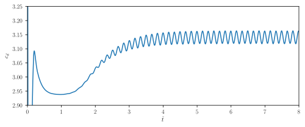
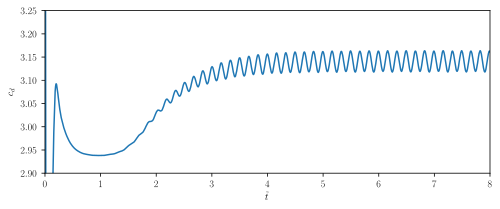

Machine learning in computational fluid dynamics - an overview
Andre Weiner, Fabian Gabriel, Darshan Thummar, Richard Semaan
TU Braunschweig, Institute of Fluid
Mechanics
Outline
- Combining ML and CFD
- Examples
- Accelerating simulations
- Finding coherent structures
- Learning control laws
- Topics (not) covered in this talk
Combining ML and CFD
why and how
Why combine CFD and ML?
CFD
- produces large amounts of complex data
- requires data or representations thereof
ML
- finds patterns in data
- creates useful representations of data
What is data?
 

primary data: scalar/vector fields, boundary fields, integral values
# log.rhoPimpleFoam Courant Number mean: 0.020065182 max: 0.77497916 deltaT = 6.4813615e-07 Time = 1.22219e-06 PIMPLE: iteration 1 diagonal: Solving for rho, Initial residual = 0, Final residual = 0, No Iterations 0 DILUPBiCGStab: Solving for Ux, Initial residual = 0.0034181127, Final residual = 6.0056507e-05, No Iterations 1 DILUPBiCGStab: Solving for Uy, Initial residual = 0.0052004883, Final residual = 0.00012352706, No Iterations 1 DILUPBiCGStab: Solving for e, Initial residual = 0.06200185, Final residual = 0.0014223046, No Iterations 1 limitTemperature limitT Lower limited 0 (0%) of cells limitTemperature limitT Upper limited 0 (0%) of cells limitTemperature limitT Unlimited Tmax 329.54945 Unlimited Tmin 280.90821Checking geometry... ... Mesh has 2 solution (non-empty) directions (1 1 0) All edges aligned with or perpendicular to non-empty directions. Boundary openness (1.4469362e-19 3.3639901e-21 -2.058499e-13) OK. Max cell openness = 2.4668495e-16 OK. Max aspect ratio = 3.0216602 OK. Minimum face area = 7.0705331e-08. Maximum face area = 0.00033983685. Face area magnitudes OK. Min volume = 1.2975842e-10. Max volume = 6.2366859e-07. Total volume = 0.0017254212. Cell volumes OK. Mesh non-orthogonality Max: 60.489216 average: 4.0292071 Non-orthogonality check OK. Face pyramids OK. Max skewness = 1.1453509 OK. Coupled point location match (average 0) OK.
secondary data: log files, input dictionaries, mesh quality metrics, ...
Examples for data-driven workflows

Example: creating a surrogate or reduced-order model based on numerical data.

Example: creating a space and time dependent boundary condition based on numerical or experimental data.

Example: creating closure models based on numerical data.

Example: active flow control or shape optimization.
But how exactly does it work?
ML is not a generic problem solver ...
Supervised learning

Creating a mapping from features to labels based on examples.
Unsupervised learning


Finding patterns in unlabeled data.
(Deep) Reinforcement learning

Create an intelligent agent that learns to map states to actions such that cumulative rewards are maximized.
What if my problem does not fit into these categories?
$\rightarrow$ mathematical, physical, numerical modeling
Accelerating simulations
A single-phase simulation approach to compute the mass transfer at rising bubbles
Gas-liquid reactors

micro reactor
size: millimeter
source: SPP 1740
prediction of
- mass transfer
- enhancement
- mixing
- conversion
- selectivity
- yield
- ...

bubble column reactor
size: meter
source: R. M. Raimundo, ENI
Specimen calculation
$d_b=1~mm$ water/oxygen at room temperature
- $Pe = Sc\ Re = \nu_l / D_{O_2} \cdot U_b d_b/\nu_l \approx 10^5 $
- $$ Re\approx 250;\quad \delta_h/d_b \propto Re^{-1/2};\quad\delta_h\approx 45~\mu m $$
- $$ Sc\approx 500;\quad \delta_c/\delta_h \propto Sc^{-1/2};\quad\delta_c\approx 2.5~\mu m $$
$\delta_h/\delta_c$ typically 10 ... 100
feasible simulations up to $Pe\approx 10000$ (3D, HPC)
Why we might be interested in a simplified simulation approach:
- perform parameter studies
- validate boundary layer models
- generate data for ML-based models
- ...
Idea: decoupling of two-phase flow and species transport
1. Two-phase flow simulation (Volume-of-Fluid)

2. Parametrization of shape and interfacial velocity

3. Geometry generation and export (STL format)

4. Single phase mesh

5. Flow solution

6. Species transport


Two-phase velocity field (left half) versus single-phase velocity field (right half); speed-up of 20-40x with 120x finer mesh at surface.
Mesh motion and zoom view of concentration boundary layer for $Re=569$ and $Sc=100$.

Global Sherwood number $Sh$ for two different mesh resolutions (3250 and 6500 cells/diameter). ~7h, serial, 2.4 GHz.
Finding coherent structures
Modal analysis of transonic shock buffets on a NACA0012 airfoil
Slice of local Mach number $Ma$, 3D, $\alpha=4^\circ$.
Things we might be interested in:
- dominant frequencies and where they come from
- interaction between different phenomena
- simplified buffet model
- ...
Tool: Dynamic mode decomposition (DMD)
Definition of data matrices:
$$ \mathbf{X} = \left[ \begin{array}{cccc} | & | & & | \\ \mathbf{x}_1 & \mathbf{x}_2 & ... & \mathbf{x}_{N-1} \\ | & | & & | \\ \end{array}\right],\quad \mathbf{X}^\prime = \left[ \begin{array}{cccc} | & | & & | \\ \mathbf{x}_2 & \mathbf{x}_3 & ... & \mathbf{x}_{N} \\ | & | & & | \\ \end{array}\right] $$
$\mathbf{x}_n$ - state vector snapshot at timestep $n$
DMD Core idea
$$ \mathbf{x}_{n+1} = \mathbf{Ax}_n $$
$\mathbf{A}\in \mathbb{C}^{M\times M}$ - best-fit linear operator
How to compute $\mathbf{A}$?
$$ \underbrace{[\mathbf{x}_2, ..., \mathbf{x}_N]}_{\mathbf{X}^\prime} = A \underbrace{[\mathbf{x}_1, ..., \mathbf{x}_{N-1}]}_{\mathbf{X}} $$
$$ \mathbf{X}^\prime = \mathbf{AX} \rightarrow A\approx \mathbf{X}^\prime\mathbf{X}^{-1} = \mathbf{X}^\prime\mathbf{V\Sigma}^{-1}\mathbf{U}^T $$
best-fit (least squares) linear operator
Use of eigen-decomposition $\mathbf{A} = \mathbf{\Phi\Lambda\Phi}^{-1}$:
$$ \mathbf{x}_N = \mathbf{\Phi\Lambda}^{N-1}\mathbf{\Phi}^{-1} \mathbf{x}_1 $$
- DMD modes - column vectors $\mathbf{\Phi}$
- mode amplitudes - $\mathbf{b} = \mathbf{\Phi}^{-1}\mathbf{x}_1$
- eigenvalues $\mathbf{\Lambda}$ describe time dynamics
DMD spectrum for 2D and 3D datasets/simulations; $\bar{f}=2\pi c f/U_\infty$.

Real parts of DMD buffet mode and first harmonic; $u$ and $v$ are the velocity components.
DMD mode at approx. $20f_{buffet}$, $u$-component.
Learning control laws
Active control of the flow past a cylinder
https://github.com/darshan315/flow_past_cylinder_by_DRL
https://github.com/FabianGabriel/Active_flow_control_past_cylinder_using_DRL
Flow past a circular cylinder at $Re=100$.
Things we might be interested in:
- reducing drag and lift forces
- mitigate extreme events
- ...
Can we reduce drag and lift forces?

Proximal policy optimization (PPO) workflow (GAE - generalized advantage estimate).

Policy networks outputs parameters of probability density function.
reward at time $t$
$$ R_t = r_0 - \left( r_1 c_D + r_2 |c_L| + r_3 |\dot{\theta}| + r_4 |\ddot{\theta}| \right) $$
- $c_D$ - drag coefficient
- $c_L$ - lift coefficient
- $\dot{\theta}$ - angular velocity
- $\ddot{\theta}$ - angular acceleration
- $r_i$ - constants
long-term consequences
$$ G_t = \sum\limits_{l=0}^{N_t-t} \gamma^l R_{t+l} $$
- $t$ - control time step
- $G_t$ - discounted return
- $\gamma$ - discount factor, typically $\gamma=0.99$
- $N_t$ - number of control steps
learning what to expect in a given state - value function loss
$$ L_V = \frac{1}{N_\tau N_t} \sum\limits_{\tau = 1}^{N_\tau}\sum\limits_{t = 1}^{N_t} \left( V(s_t^\tau) - G_t^\tau \right)^2 $$
- $\tau$ - trajectory (single simulation)
- $s_t$ - state/observation (pressure)
- $V$ - parametrized value function
- clipping not included
Was the selected action a good one?
$$\delta_t = R_t + \gamma V(s_{t+1}) - V(s_t) $$ $$ A_t^{GAE} = \sum\limits_{l=0}^{N_t-t} (\gamma \lambda)^l \delta_{t+l} $$
- $\delta_t$ - one-step advantage estimate
- $A_t^{GAE}$ - generalized advantage estimate
- $\lambda$ - smoothing parameter
make good actions more likely - policy objective function
$$ J_\pi = \frac{1}{N_\tau N_t} \sum\limits_{\tau = 1}^{N_\tau}\sum\limits_{t = 1}^{N_t} \left( \frac{\pi(a_t|s_t)}{\pi^{old}(a_t|s_t)} A^{GAE,\tau}_t\right) $$
- $\pi$ - current policy
- $\pi^{old}$ - old policy (previous episode)
- clipping and entropy not included
- $J_\pi$ is maximized
Python/PyTorch
- create policy and value networks
- fill trajectory buffer (run simulations)
- update policy and value networks
- go back to 1. until converged
Implementation follows closely chapter 12 of Miguel Morales's Grokking Deep Reinforcement Learning
C++/OpenFOAM/PyTorch
- read policy network
- sample and apply action
- write trajectory (state-action pairs)

Comparison of uncontrolled, open-loop controlled, and closed-loop controlled drag.

Angular velocity for open and closed-loop control.
How robust is the controller?
- training with steady inlet velocity
$Re=\{100, 200, 400 \}$ - test with unsteady inlet velocity
$Re(t)= 250 + 150\mathrm{sin}(\pi t)$
Variable inlet velocity/Reynolds number $Re(t) = 250 + 150\mathrm{sin}(\pi t)$

Drag coefficient for transient inlet velocity: uncontrolled and controlled.
Topic (not) covered in this talk
- parametrized reduced-order models
- surrogate model-based optimization
- ML models with physical constraints
- ...
Where to go from here:
- lecture resources: ML in CFD
- OpenFOAM SIG data-driven modeling
- flowTorch documentation